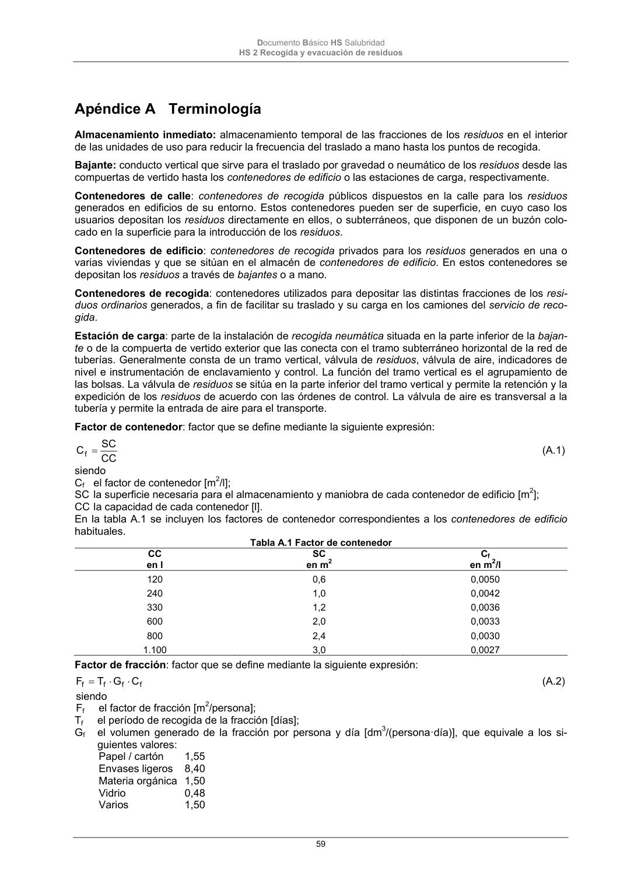
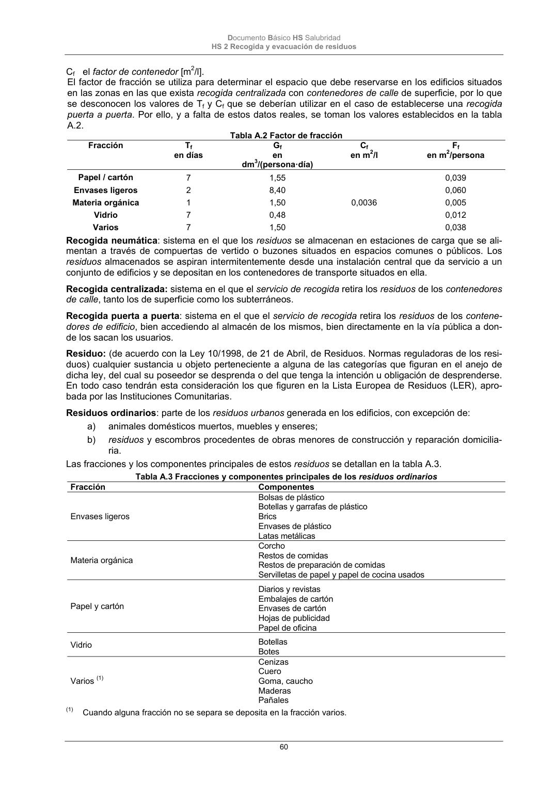

DB-HS · Apéndice A Terminología · versión 2022-06-14 · capa oficial
Formatos: JSON compacto · Markdown · PDF fuente
Ámbito del documento · texto del ámbito · documento y tablas
ID técnico a0137 · PDF pág. 59-62 · jerarquía no validada por persona · contrastado con el literal de la página 59 (candidato tipográfico); no validado por persona · padre: raíz
Apéndice A Terminología Almacenamiento inmediato: almacenamiento temporal de las fracciones de los residuos en el interior de las unidades de uso para reducir la frecuencia del traslado a mano hasta los puntos de recogida. Bajante: conducto vertical que sirve para el traslado por gravedad o neumático de los residuos desde las compuertas de vertido hasta los contenedores de edificio o las estaciones de carga, respectivamente. Contenedores de calle: contenedores de recogida públicos dispuestos en la calle para los residuos generados en edificios de su entorno. Estos contenedores pueden ser de superficie, en cuyo caso los usuarios depositan los residuos directamente en ellos, o subterráneos, que disponen de un buzón colo- cado en la superficie para la introducción de los residuos. Contenedores de edificio: contenedores de recogida privados para los residuos generados en una o varias viviendas y que se sitúan en el almacén de contenedores de edificio. En estos contenedores se depositan los residuos a través de bajantes o a mano. Contenedores de recogida: contenedores utilizados para depositar las distintas fracciones de los resi- duos ordinarios generados, a fin de facilitar su traslado y su carga en los camiones del servicio de reco- gida. Estación de carga: parte de la instalación de recogida neumática situada en la parte inferior de la bajan- te o de la compuerta de vertido exterior que las conecta con el tramo subterráneo horizontal de la red de tuberías. Generalmente consta de un tramo vertical, válvula de residuos, válvula de aire, indicadores de nivel e instrumentación de enclavamiento y control. La función del tramo vertical es el agrupamiento de las bolsas. La válvula de residuos se sitúa en la parte inferior del tramo vertical y permite la retención y la expedición de los residuos de acuerdo con las órdenes de control. La válvula de aire es transversal a la tubería y permite la entrada de aire para el transporte. Factor de contenedor: factor que se define mediante la siguiente expresión: CC SC Cf (A.1) siendo Cf el factor de contenedor [m2/l]; SC la superficie necesaria para el almacenamiento y maniobra de cada contenedor de edificio [m2]; CC la capacidad de cada contenedor [l]. En la tabla A.1 se incluyen los factores de contenedor correspondientes a los contenedores de edificio habituales. Tabla A.1 Factor de contenedor CC en l SC en m2 Cf en m2/l 120 240 330 600 800 1.100 0,6 1,0 1,2 2,0 2,4 3,0 0,0050 0,0042 0,0036 0,0033 0,0030 0,0027 Factor de fracción: factor que se define mediante la siguiente expresión: f f f f C G T F (A.2) siendo Ff el factor de fracción [m2/persona]; Tf el período de recogida de la fracción [días]; Gf el volumen generado de la fracción por persona y día [dm3/(persona·día)], que equivale a los si- guientes valores: Papel / cartón 1,55 Envases ligeros 8,40 Materia orgánica 1,50 Vidrio 0,48 Varios 1,50 Documento Básico HS Salubridad HS 2 Recogida y evacuación de residuos 60 Cf el factor de contenedor [m2/l]. El factor de fracción se utiliza para determinar el espacio que debe reservarse en los edificios situados en las zonas en las que exista recogida centralizada con contenedores de calle de superficie, por lo que se desconocen los valores de Tf y Cf que se deberían utilizar en el caso de establecerse una recogida puerta a puerta. Por ello, y a falta de estos datos reales, se toman los valores establecidos en la tabla A.2. Tabla A.2 Factor de fracción Fracción Tf en días Gf en dm3/(persona·día) Cf en m2/l Ff en m2/persona Papel / cartón Envases ligeros Materia orgánica Vidrio Varios 7 2 1 7 7 1,55 8,40 1,50 0,48 1,50 0,0036 0,039 0,060 0,005 0,012 0,038 Recogida neumática: sistema en el que los residuos se almacenan en estaciones de carga que se ali- mentan a través de compuertas de vertido o buzones situados en espacios comunes o públicos. Los residuos almacenados se aspiran intermitentemente desde una instalación central que da servicio a un conjunto de edificios y se depositan en los contenedores de transporte situados en ella. Recogida centralizada: sistema en el que el servicio de recogida retira los residuos de los contenedores de calle, tanto los de superficie como los subterráneos. Recogida puerta a puerta: sistema en el que el servicio de recogida retira los residuos de los contene- dores de edificio, bien accediendo al almacén de los mismos, bien directamente en la vía pública a don- de los sacan los usuarios. Residuo: (de acuerdo con la Ley 10/1998, de 21 de Abril, de Residuos. Normas reguladoras de los resi- duos) cualquier sustancia u objeto perteneciente a alguna de las categorías que figuran en el anejo de dicha ley, del cual su poseedor se desprenda o del que tenga la intención u obligación de desprenderse. En todo caso tendrán esta consideración los que figuren en la Lista Europea de Residuos (LER), apro- bada por las Instituciones Comunitarias. Residuos ordinarios: parte de los residuosurbanos generada en los edificios, con excepción de: a) animales domésticos muertos, muebles y enseres; b) residuos y escombros procedentes de obras menores de construcción y reparación domicilia- ria. Las fracciones y los componentes principales de estos residuos se detallan en la tabla A.3. Tabla A.3 Fracciones y componentes principales de los residuos ordinarios Fracción Componentes Envases ligeros Bolsas de plástico Botellas y garrafas de plástico Brics Envases de plástico Latas metálicas Materia orgánica Corcho Restos de comidas Restos de preparación de comidas Servilletas de papel y papel de cocina usados Papel y cartón Diarios y revistas Embalajes de cartón Envases de cartón Hojas de publicidad Papel de oficina Vidrio Botellas Botes Varios (1) Cenizas Cuero Goma, caucho Maderas Pañales (1) Cuando alguna fracción no se separa se deposita en la fracción varios. Documento Básico HS Salubridad HS 2 Recogida y evacuación de residuos 61 Residuos urbanos: (de acuerdo con la Ley 10/1998, de 21 de Abril 1998, de Residuos. Normas regula- doras de los residuos) los generados en los domicilios particulares, comercios, oficinas y servicios, así como todos aquellos que no tengan la calificación de peligrosos y que por su naturaleza o composición puedan asimilarse a los producidos en los anteriores lugares o actividades. Tendrán también la conside- ración de residuos urbanos los siguientes: a) residuos procedentes de la limpieza de vías públicas, zonas verdes, áreas recreativas y pla- yas; b) animales domésticos muertos, así como muebles, enseres y vehículos abandonados; c) residuos y escombros procedentes de obras menores de construcción y reparación domicilia- ria. Servicio de recogida: servicio encargado de recoger los residuos generados en los edificios y transpor- tarlos hasta las instalaciones de reciclaje, valorización o eliminación. Este servicio lo presta habitualmen- te la administración municipal, bien directamente bien a través de empresas contratadas; aunque en algunos casos lo hace una agrupación de municipios o una administración supramunicipal. Documento Básico HS Salubridad HS 2 Recogida y evacuación de residuos 62


PDF fuente redistribuible: copia fiel enlazada en esta página (SHA256 verificado).